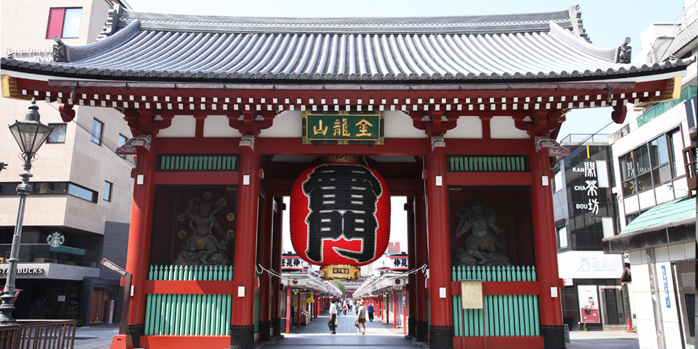
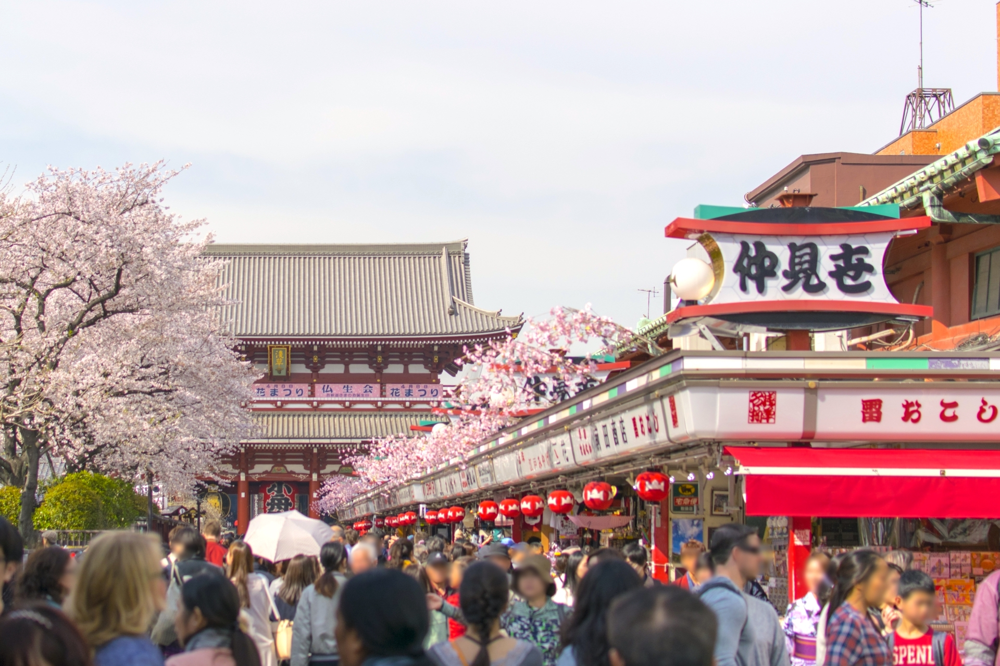
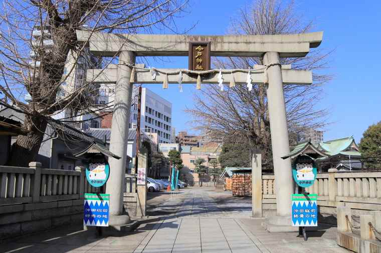
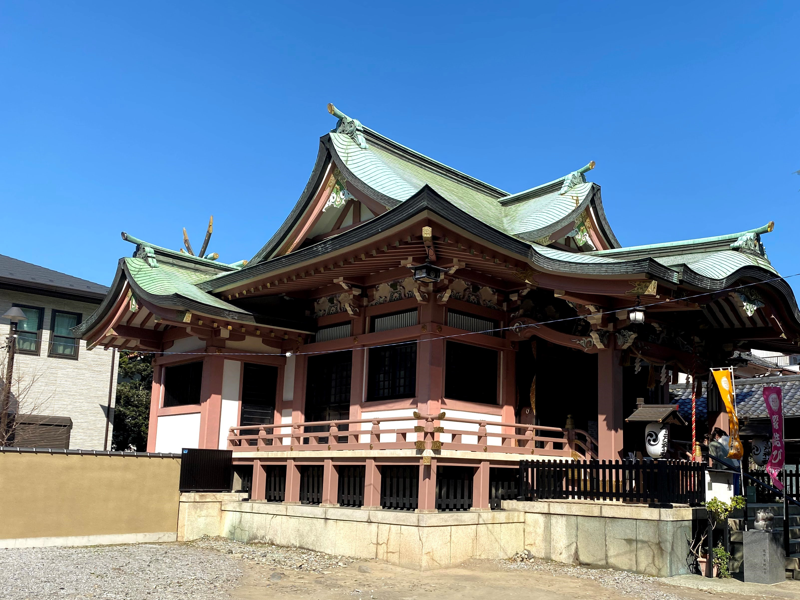
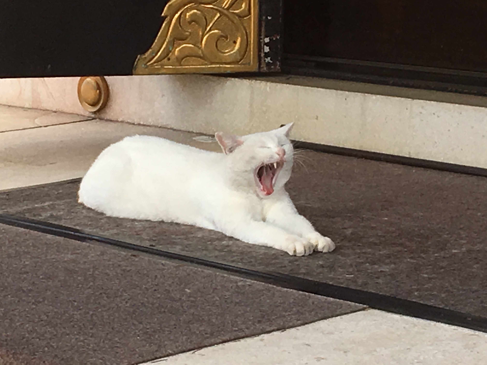
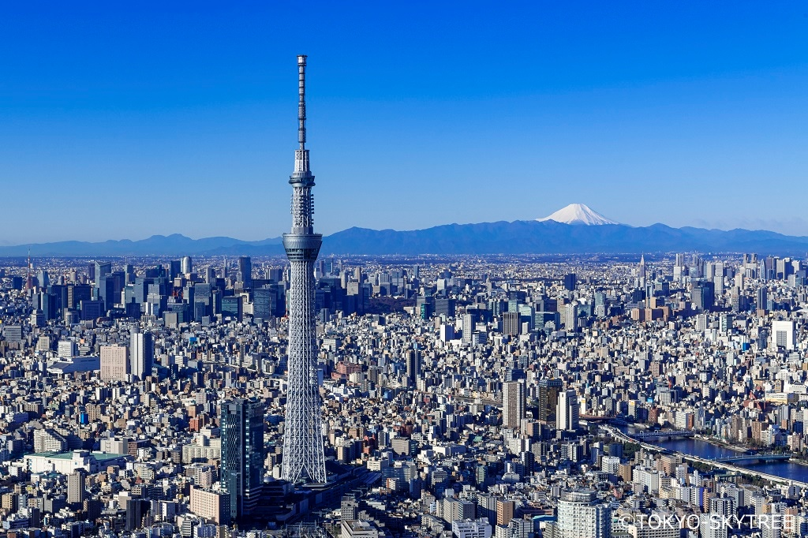
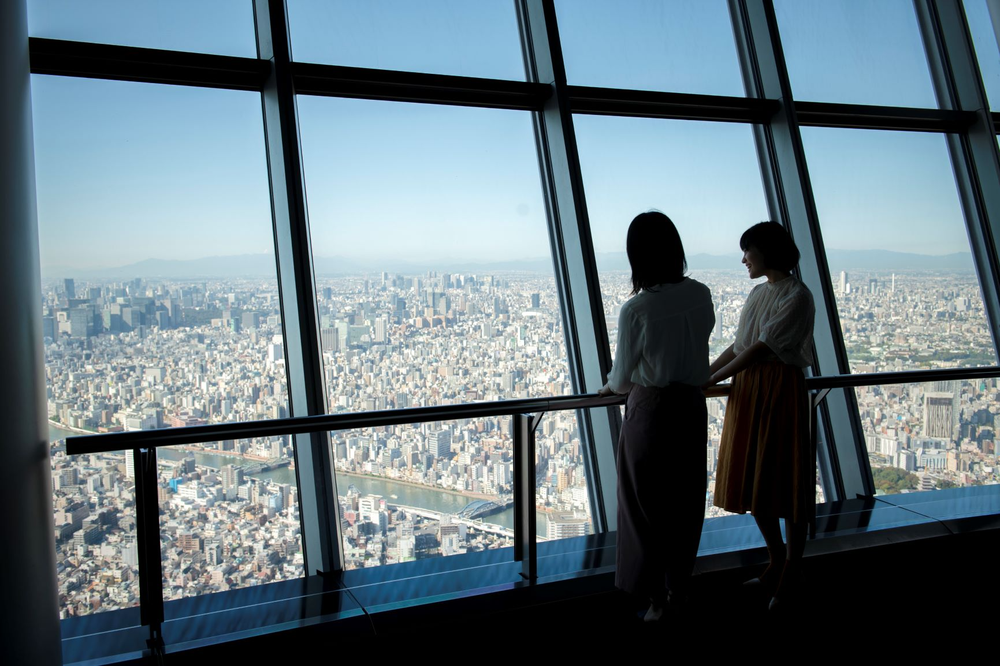

世界中から人が集まる ― 浅草
4/25 2022
カテゴリー：東京
目次
1. 浅草寺

浅草のシンボル雷門。正式名称は「風雷神門」

日本で最も古い商店街の一つ。東側に54、東側に35、合計89の店舗がある。長さ約250メートルになる。
2. 今戸神社

康平6（1063）年に創建された神社で、七福神のうちの福禄寿をご祭神とする。縁結びや婚活神社として、良縁や恋愛成就を願う女性に絶大な人気を誇る。招き猫の発祥地としても知られる。
営業時間 9;00~17:00
 神社の猫。運が良ければ会うことができる
3. スカイツリー
高さ634mの世界一高い自立式電波塔。空に向かって伸びる大きな木をイメージした造り。2022年に10周年を迎える。
地上350mと450mの位置に展望台が設置され、450mからは晴天時、約75km先まで見渡せる。